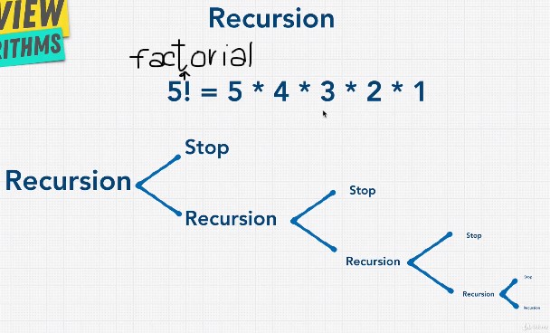
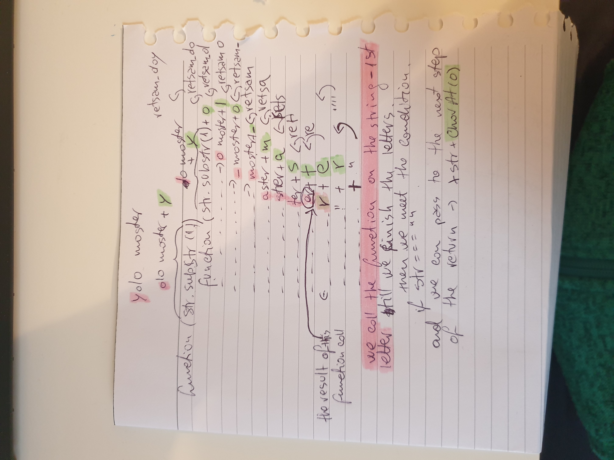

Recursion
- Is useful for tasks that have repeated tasks to do - Looking for directories inside other directories in the computer to find files for ex
- a function that calls itself
- an object inside another object
- concept used in sorting and searching
- a problem that can occur with recursion is stack overflow - water grass animation - the computer will run out of memory if the it will call to many times the recursive function -
Solution - every recursive function needs to have the following
- the base case
- the recursive case
- get closer and closer and return when needed - usually it has 2 returns(base case and recursive case) - once the base case is meet it will start to empty the stack and the last function to return will be the first one called (the stack theory - from top(last) to bottom(first) )

Fibonacci using recursion explained

Anything that can be done using recursion it can be done with iteration(loops)
The Fibonacci and Factorial number for example can be done in both ways - but we need to keep in mind the pros and cons when deciding which way to go
For example the fibonacci problem solved using recursion if is not implemented well (using dynamic programming and storing) - it can cost more time than iteration (O(n) with iteration and O(2^n)- recursion)
Positive aspects - DRY and Readability
Negative sides - Large stacks(memory) - can cause stacks overflows - is very costly(space complexity) and hard to grasps
When to use recursion - every time you are using a tree or converting something into a tree - consider recursion
DIVIDE AND CONQUER
- divided into a number of problems that are smaller instances of the same problem
- each instance of the problem is identical in nature
- the solutions of the instances can be combined to solve the problem at hand